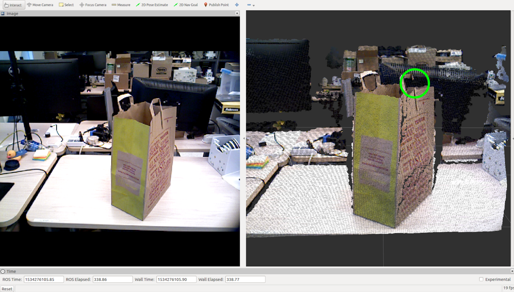
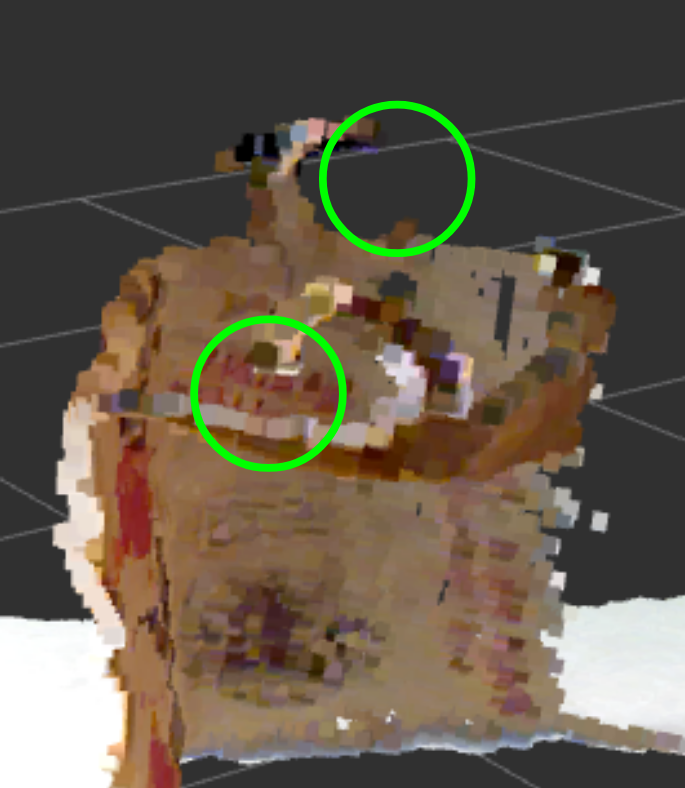

Particle-Based Localization and Grasping of Grocery Bags
The idea of trying to pick up paper grocery bags originally came from a lab discussion about new robot demonstrations. In a discussion about Kevin French's work Learning Behavior Tress from Demonstration, we considered an experiment where the robot would learn how to efficiently pack grocery bags. At the end of the experiment, the robot would pick up the bag and drive away, for dramatic effect.
I took responsibility for this task, and quickly realized it would be far more complicated than it first appeared. There were two key challenges. The bag, and especially its handles, are deformable, which makes any detection or localization task inherently more difficult. And furthermore, the depth camera on our robot sometimes struggles to detect the handles. (See the images below for some examples of detection failures.)


First, I explored different ways of extracting information from the raw image input to the robot. Edge detection and the Scale-Invariant Feature Transform descriptor looked interesting, but ultimately weren't useful in detecting the handles. Eventually, I settled on the Histogram of Oriented Gradients (HOG) descriptor for feature extraction, since it's good at handling deformable objects.
Edge detection on the image.
Edge detection applied to the rgb and depth images.
SIFT descriptors of the rgb and depth images.
To detect bag handles, I used a sliding window, powered by a linear support vector machine. Oftentimes, a single handle would be detected multiple times; to reduce these to a single estimate, I would cluster nearby detections using the DBSCAN clustering algorithm. (I've uploaded an interactive JavaScript implementation of DBSCAN elsewhere on my website.) The centroids of these clusters were then used as the final estimates of the detections.
An early version of the detector, displaying the HOG descriptors of the image.
The final version of the detector.
To actually pick up the bag, the robot needs to know the 3D location of its handles. The HOG detector gives us a 2D location in the image, which extends to a ray in 3D space. An initial, primitive solution was to just look a bit further down, and get the depth of the body of the bag itself. But this isn't a very robust solution, and rarely is able to localize the second handle. In order to reliably find both handles in a variety of conditions, I drive the robot around the bag to triangulate the location of the handles. To handle false positives and noise, I use a pair of particle filters to localize the two handles, with a repulsive factor to ensure they don't converge to the same handle.
A successful grasp, using the original 3D localization technique.
An initial simulation of the particle filter concept, using a single particle filter, with clustering to find the two handles.
A successful localization of both handles of the grovery bag, using the dual particle filter system.
The full codebase of this project is scattered across several repositories.